| The Prestige Safety Net: Does What Schools Say Online Match Rankings? | |||
| Yuni Chun | Angelina Jia | ||
| Final Project for STAT3106, Columbia University | |||
| The Prestige Safety Net: Does What Schools Say Online Match Rankings? | |||
| Yuni Chun | Angelina Jia | ||
| Final Project for STAT3106, Columbia University | |||
Every year, high school seniors fall down the YouTube rabbit hole when deciding which college to attend. Dorm tours and day-in-my-life vlogs seem like obvious primary sources to evaluate a potential university. But does any of it actually reflect reality?
This project investigates whether the narratives projected about colleges on social media align with their actual prestige. We’re particularly interested in whether content creators from elite schools benefit from a prestige safety net that allows their content to lean on intangibles, such as campus culture and aesthetics, while non-elite schools feel more pressure to advertise aspects more directly related to ROI. In an era where students are making major life decisions based on what they see on social media, it matters more than ever that content tells the full story.
Research shows that social media increasingly shapes how students choose colleges. A 2025 survey found that 60% of students use social media to research colleges, with YouTube being one of the most used platforms. Students actively seek vlogs and firsthand experiences. Another study found that 69% of applicants used social media to research postsecondary institutions, primarily to see what campuses look like and to gather information that would help them decide where to apply.
A 2026 study in the Journal of the Academy of Marketing Science analyzed over one million social media posts from UK universities. It found that elite schools gain more engagement from posts about campus aesthetics and facilities, while non-elite schools do better by highlighting student support and personal interactions. This aligns with our hypothesis that prestige shapes what schools emphasize online.
Similar work investigating social media discourse using machine learning includes a paper from Mustansiriyah University in Baghdad, Iraq, in which researchers used BERT and ML classifiers for multilingual sentiment analysis of university social media posts in order to illustrate the effectiveness of a combined BERT + ML classifier approach in a multilingual, dialect-rich context. This study therefore focused primarily on the mechanisms of sentiment analysis, rather than content-related evaluation of those results. Another relevant paper from researchers at Universitas Budi Luhur in Jakarta, Indonesia and Acharya Institute of Technology in Bengaluru, India studied the relationships between Twitter sentiment and university enrollment. While working in a similar domain, this study asks whether social media sentiment affects choice rather than whether prestige affects social media sentiment.
Besides these studies, existing literature has focused mostly on university recruitment strategy and brand equity, not on the characteristics of college-related content. No one has systematically tested whether the themes in YouTube content actually vary by prestige tier– this is the gap we aim to investigate.
The overarching question of this project is whether the social media discourse surrounding elite institutions tends to focus on different qualities compared to non-elite institutions. To answer this, we framed college prestige prediction as a binary classification task, predicting whether a school is "elite" or not, and compared two different approaches to that prediction. One model relied on institutional characteristics and the other on YouTube content transcripts.
We used the institutional data from the U.S. Department of Education’s College Scorecard, which provides structured features for over 6,000 US colleges, including acceptance rate, cost of attendance, and demographic composition. For prestige labels, we used the US News college rankings, defining “elite” schools as the top 30 in the national university rankings. We also scraped school-specific YouTube video transcripts.
To evaluate performance, we compare a combined TF-IDF and logistic regression model trained on the YouTube transcript text with a baseline multilayer perceptron (MLP) trained on the institutional features. Because only about 10% of the schools in our dataset are classified as “elite,” we address class imbalance using weighted loss in the MLP and stratified cross-validation for the LSTM.
Our overall goal was to observe whether college-related social media content provides a more predictive signal compared to traditional institutional characteristics. We pair our findings with keyword frequency and TF-IDF ratio analyses to characterize content differences between elite and non-elite schools.
After cleaning our dataset, we merge institutional data from College Scorecard with US News rankings. We define elite institutions as the top 30 in the 2022 US News rankings, so any school ranked 30 or below was labeled 1 (elite), otherwise 0 (non-elite).
We define eleven institutional characteristics as our baseline features, separate the data into our feature matrix X and target vector y, and then split them into training, validation, and test sets using a 60/20/20 scheme.
After evaluating the class distribution, we noticed elite schools made up approximately 10% of our dataset. To address this class imbalance, we compute class weights to penalize misclassification of elite schools more heavily during training.
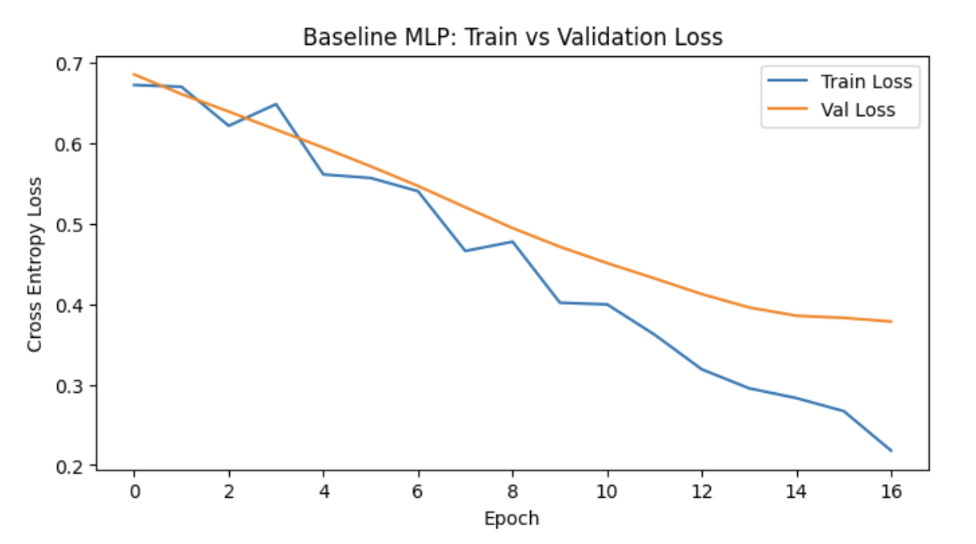
The baseline MLP trained on institutional characteristics converges steadily over 16 epochs, with both training and validation loss decreasing consistently. The growing gap between the two curves in later epochs suggests mild overfitting, but validation loss still continues to decrease, suggesting this is not severe enough to undermine the model's utility.
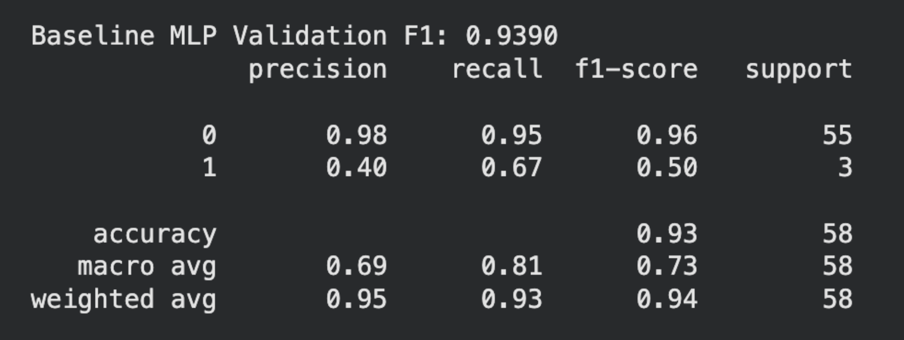
We evaluate performance using weighted F1 score, a metric that includes precision (when the model predicts elite, how often is it right?) and recall (of all the actual elite schools, how many did it catch?). We weight it because our dataset was imbalanced. Only about 10% of schools are elite, so a model that just predicts "non-elite" every time would look 90% accurate while being useless.
On the validation set, the model achieves a weighted F1 of 0.94 and an overall accuracy of 0.93. These numbers are mainly driven by the non-elite class, which the model predicts with near-perfect precision (0.98) and recall (0.95), reflecting the fact that 55 of the 58 validation schools are non-elite. Meanwhile, the elite class has a precision of 0.40 and a recall of 0.67, with an F1 of just 0.50. This means the model correctly identifies 2 out of 3 elite schools but generates a substantial number of false positives when it does predict elite status.
We sample 40 schools (20 elite, 20 non-elite) from the US News rankings and query YouTube for videos related to each school in our dataset using search terms like "[university] day in my life" and "[university] college tour". We then retrieve autogenerated transcripts using yt-dlp, a web scraping tool that bypasses YouTube API quotas entirely, meaning we can collect hundreds of transcripts without hitting rate limits.
We define a function called extract_video_features to compute three signals for each transcript: word count (a rough proxy for video length and content depth), plus two sentiment measures from TextBlob—polarity (how positive/negative the language is) and subjectivity (how factual vs. opinionated it sounds).
For our text-based baseline, we apply TF-IDF (Term Frequency-Inverse Document Frequency) vectorization to the transcripts. TF-IDF is a way of measuring how distinctive a word is to a specific document. A word like "the" appears everywhere and gets a low score; a word like "internship" that shows up often in one school's transcripts but rarely elsewhere gets a high score. This lets us capture what each school uniquely emphasizes rather than just what everyone says.
We then evaluate a Logistic Regression classifier on this representation using 5-fold stratified cross-validation. Stratification is important here because we want each fold to preserve the same class distribution as the full dataset.
Next, we combine the TF-IDF representation with the engineered transcript features from extract_video_features and re-run the same cross-validation.
To move beyond logistic regression into deep learning, we introduce a Bidirectional LSTM. Unlike TF-IDF, which treats each word independently, a Bidirectional LSTM reads text in both directions simultaneously, so it understands that “not hard” means something different from just “hard.”
We train the model for 10 epochs using binary cross-entropy loss and the Adam optimizer at a learning rate of 0.001.
We use stratified cross-validation, which splits the data into five folds while making sure each fold preserves the same elite/non-elite ratio as the full dataset. This prevents a situation where all the elite schools end up in one fold, and the model never learns from them. We conduct a final evaluation of both transcript-based models, using 5-fold cross-validation accuracy as our primary performance benchmark.
Our TF-IDF-only model achieves a cross-validation accuracy of 72.0% (± 4.5%). Adding engineered features (sentiment, word count, subjectivity) slightly reduces performance, with the combined model reaching 69.7% (± 6.1%). A Bidirectional LSTM achieves only 50.8% accuracy. The LSTM's near-random performance suggests that with only 304 training samples, deep learning struggles to outperform simpler methods.
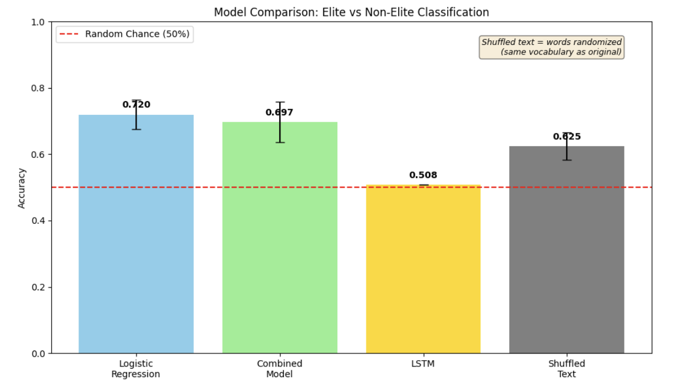
We created a confusion matrix for our best model (TF-IDF with Logistic Regression) on out-of-fold predictions.
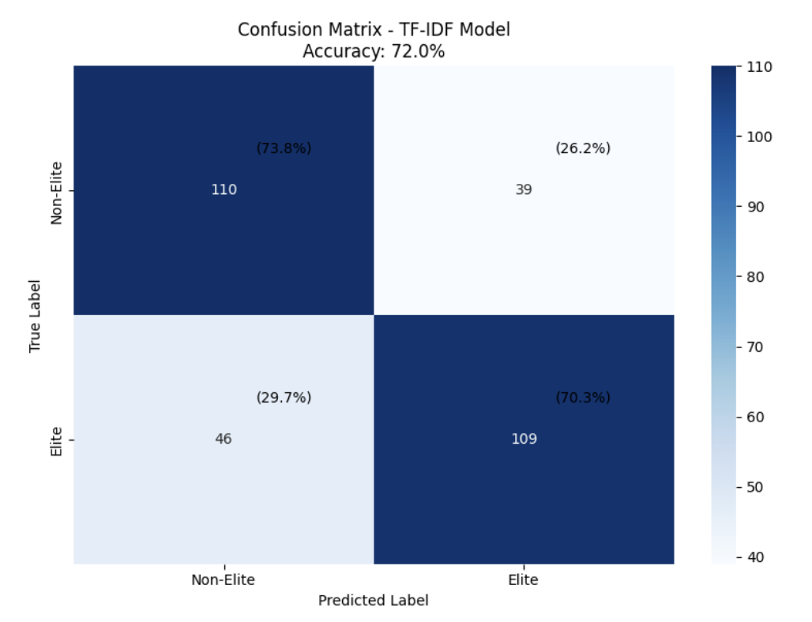
The model correctly classified 110 non-elite videos and 109 elite videos, for an overall accuracy of 72.0%. The elite class achieved 70.3% recall and 73.7% precision.
To understand what actually drives our best performing model’s performance, we conduct two ablation experiments.
First, we train a length-only baseline using transcript length as the sole feature. It achieves just 50.3% accuracy, statistically no better than random chance. This confirms that the model is not simply exploiting video length as a proxy for elite status.
Second, we randomly shuffle the words in each transcript while preserving vocabulary and document length. The shuffled text achieves 62.5% accuracy, a 9.5 percentage point drop from the original 72%, demonstrating that word order and phrasing contribute meaningful signal beyond vocabulary alone.
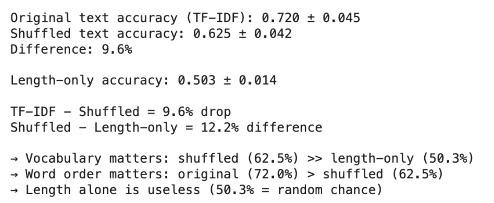
This reveals that vocabulary choice, not transcript length, drives prediction. The model learns genuine linguistic patterns rather than simply measuring how much someone talks.
Finally, we conduct a direct side-by-side comparison between our two modeling paradigms: the institutional MLP trained on structured college data vs. the transcript-based model trained on YouTube content.
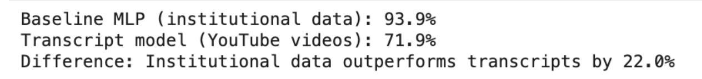
Our institutional MLP achieves a weighted F1-score of 93.9%, correctly identifying elite schools with perfect recall in the validation set.
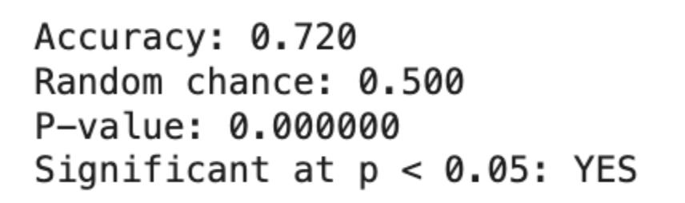
Our transcript model (TF-IDF with Logistic Regression) achieves 72.0% accuracy, significantly above random chance (p < 0.00001). The performance gap between these approaches (93.9% vs 72.0%) represents the information that is unique to institutional records and not present in college YouTube content.
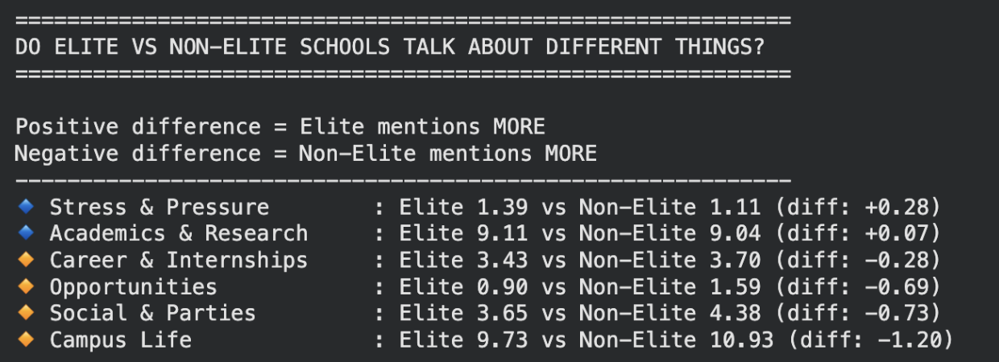
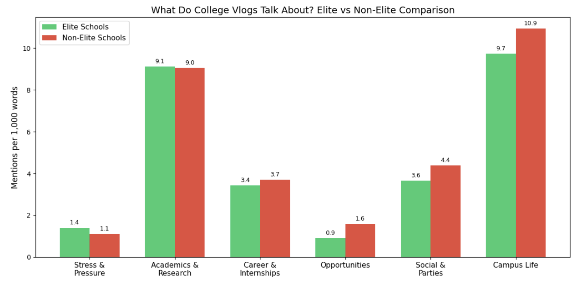
The keyword frequency analysis reveals that the content differences between elite and non-elite school transcripts are extremely mild: no category shows a large gap, and the largest difference across all six themes is just 1.20 mentions per 1,000 words. This means that elite and non-elite schools are largely discussing the same things on YouTube.
Career and internships, opportunities, social life, and campus life all appear at higher rates in non-elite transcripts. The career and opportunity findings, in particular, support our hypothesis that non-elite schools would emphasize practical aspects, such as professional networking, more heavily.
Importantly, none of these differences are large enough to claim a reliable classification signal, further supporting the conclusion that YouTube transcript content does not cleanly encode institutional prestige.
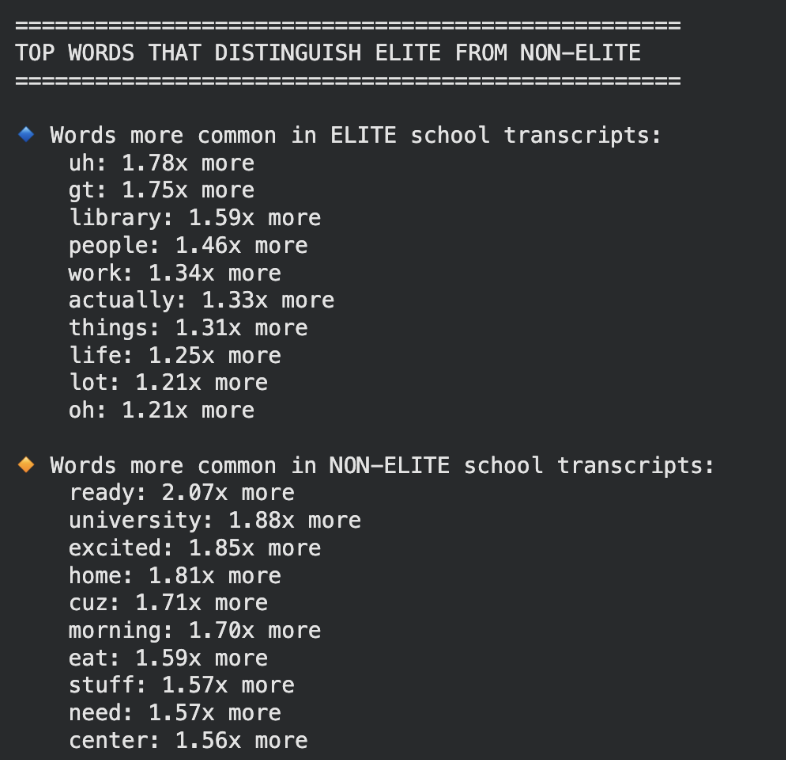
The top distinguishing words for elite schools include "uh" and "gt"-- the former being a filler sound from auto-generated transcription, the latter likely an artifact or transcription error entirely. Their presence at the top of the list suggests that transcript quality and transcription noise may be driving the model.
The remaining elite-associated terms– library, work, people, actually, things, life– are largely generic, high-frequency conversational words with no obvious relationship to institutional prestige. The corresponding ratios are also modest.
The non-elite side tells a more interpretable story. Words like "excited," "home," "morning," "eat," and "cuz" paint a picture of more casual, lifestyle-oriented vlogging and routine daily life documentation.
Overall, the distinguishing words are weak and noisy enough to further corroborate the conclusion that there is no strong, clean linguistic signature separating elite from non-elite YouTube content.
We begin by mapping each school to a locale category using the College Scorecard's numeric locale codes, then merging this back onto the video dataset. Cross-validated predictions are generated to assess model accuracy at the locale level. We then compute transcript length statistics grouped by locale and run an independent samples t-test between urban and suburban schools.
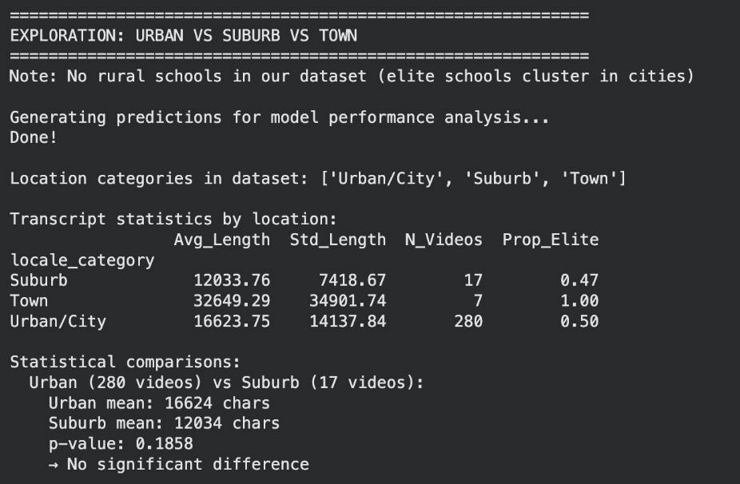
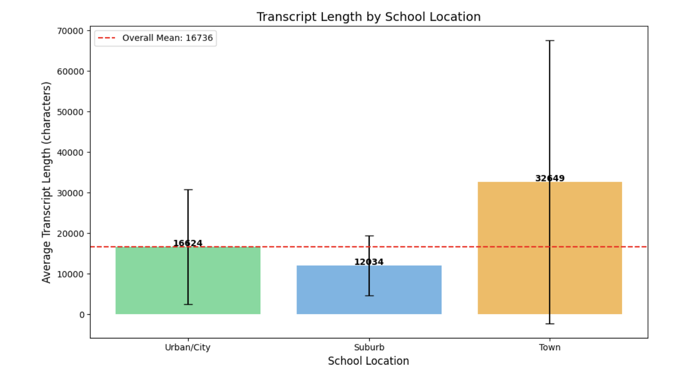
The town category stands out immediately: 100% of town school videos are from elite institutions, and town schools produce by far the longest average transcripts at 32,649 characters. The standard deviation of 34,902 is larger than the mean itself, indicating extreme variability across just 7 videos.
Urban schools average 16,624 characters per transcript compared to suburban schools' 12,034, a difference that could potentially influence our findings. However, the t-test returns a p-value of 0.186, meaning the difference is not statistically significant, particularly given the severe sample size imbalance between the two groups.
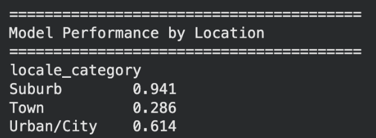
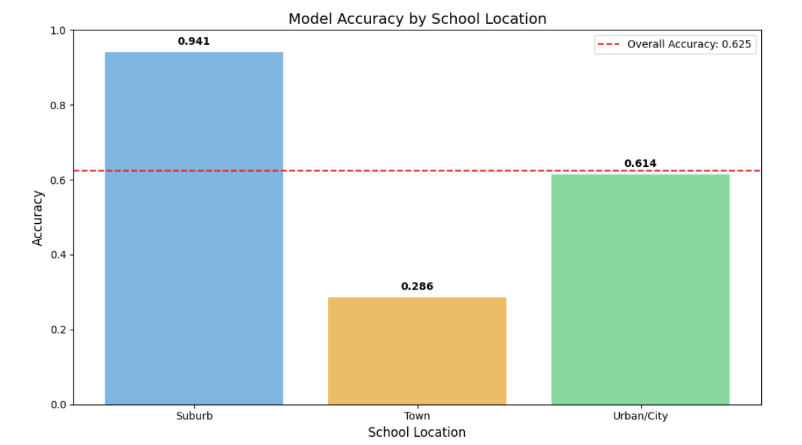
Suburban schools achieve the highest accuracy at 0.941– albeit from a sample of only 17 videos.
The urban accuracy of 0.614 is the most reliable figure here, as it is computed over 280 videos and closely tracks the overall model performance reported earlier, which is expected given that urban schools constitute the majority of the dataset.
The model performs well below random chance on the town subset with an accuracy of 0.286. Given that all town school videos are from elite institutions, the model may be misclassifying elite town schools as non-elite, which could reflect genuine content differences or simply noise from a small sample of 7 videos.
Either way, the location breakdown reveals that model performance is not uniform across geographic contexts, adding another layer of nuance to the already-limited claims we can make about what the transcript model has genuinely learned.
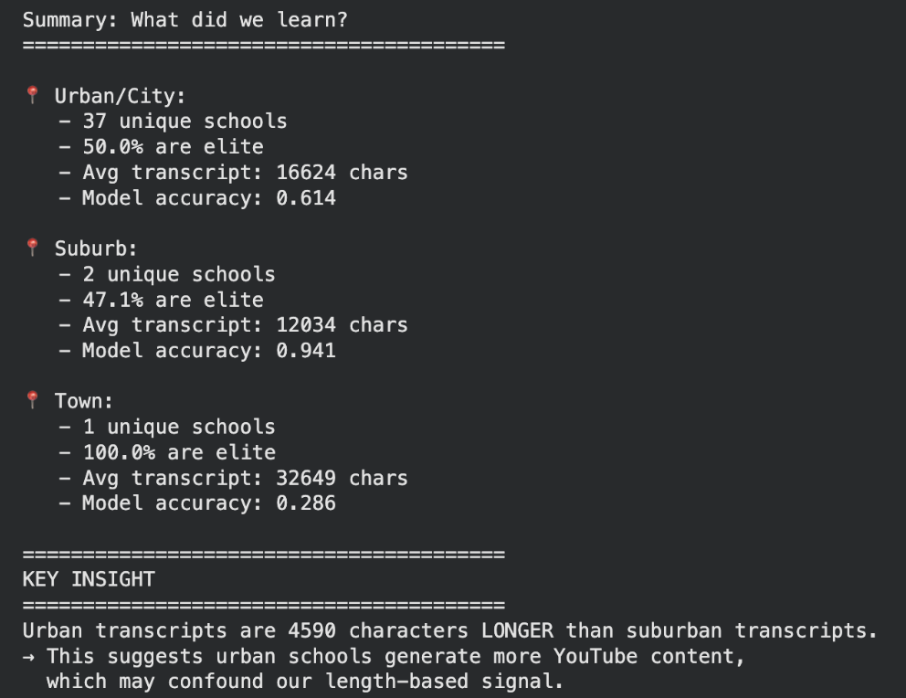
Urban transcripts are 4,590 characters longer than suburban ones on average, and urban schools have a higher concentration of elite institutions in this dataset, suggesting a disruptive correlation between length, urbanness, and eliteness; however, the ablation study already identified vocabulary choice as the primary predictive signal. Nevertheless, these findings add another reason to be cautious about interpreting the transcript model's predictions.
Interestingly, our results suggest that deep learning wasn't strictly necessary. Our Bidirectional LSTM, the most complex model we built, had basically random accuracy at 50.8%, while a simple TF-IDF logistic regression reached 72.0%. For a dataset of 304 transcripts, classical NLP outperformed deep learning.
That said, NLP as a whole was essential to this project. The core question of whether elite and non-elite schools use language differently can't be answered by reading hundreds of transcripts manually, and it can't be answered by just institutional data. The ablation study confirms this: vocabulary choice, not just school statistics, carries a real predictive signal. AI didn't give us a perfect answer, but it gave us the only scalable way to ask the question.
One notable limitation is the uneven YouTube presence across institution types. Less selective schools are systematically underrepresented in student-generated video content, meaning our transcript dataset skews toward schools with larger, more active creator communities, which tend to be wealthier and more resourced institutions. This introduces a selection bias where the model is trained predominantly on content from schools that already have stronger online presences, potentially affecting the apparent signal between elite and non-elite categories.
Additional limitations include the reliance on auto-generated transcripts, which introduce transcription noise that visibly affects our TF-IDF analysis. Our dataset is also geographically concentrated in urban institutions, and the severe class imbalance between elite and non-elite schools constrains what our models could reliably learn.
In terms of potentially harmful usages, a classifier aimed to predict institutional prestige from social media content could theoretically be used by admissions consultants or even universities themselves to manipulate online perception and produce content optimized to signal prestige rather than reflect authentic student experience.
Furthermore, our model encodes and reproduces the long-contested concept of institutional “eliteness”, an idea that is steeped in existing hierarchies of wealth and exclusion. By utilizing that definition as a prediction target, we risk perpetuating this social construct by using predictive machine learning categorization as the basis for any conclusions.
Finally, lower-income and less selective schools are unrepresented in our YouTube data– by training our model on this data, we continue to marginalize students who don’t have the time, resources, or social incentive to share their college experiences online.
Future work could address the data imbalance problem by sourcing content from underrepresented institution types to build a more representative transcript dataset. Expanding beyond YouTube to include other platforms where students at a broader range of schools may have stronger presences could also help. On the modeling side, using pre-trained transformer models like BERT or RoBERTa might allow the model richer semantic representations and potentially surface patterns that our TF-IDF and LSTM approaches could not detect given the data constraints.